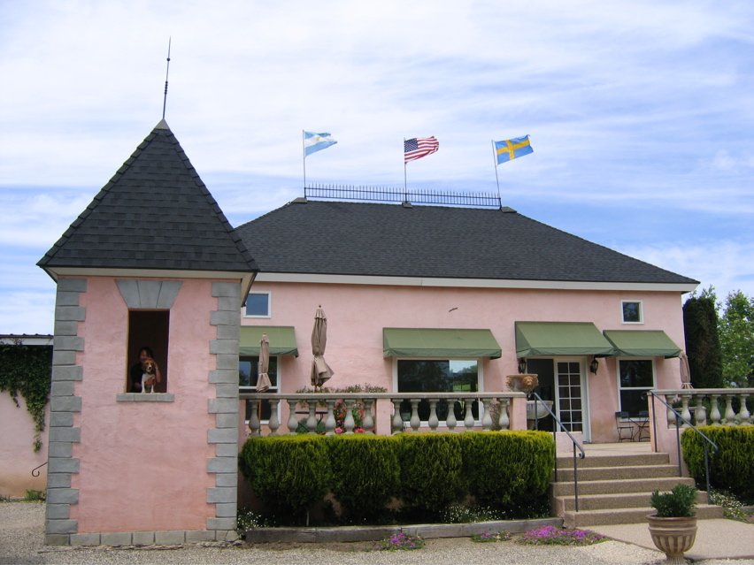

<--Previous Up Next-->

Chateauneuf du Pink
At the eastern edge of SYV wine country, Brander makes wines from (unusually for the area) nothing but Bordeaux grapes. Their pink chateau may get a laugh at first sight, but the turret was the perfect place for a picnic with (of course) a bottle of rosé. Though it was sunny and hot when we started, the SYV winds were blowing before we were done -- check out those flags. The winemaker is a Swede by way of Argentina.